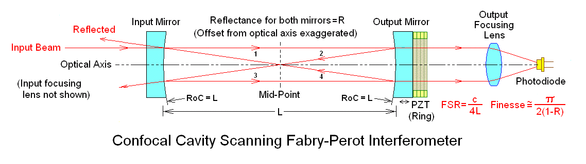
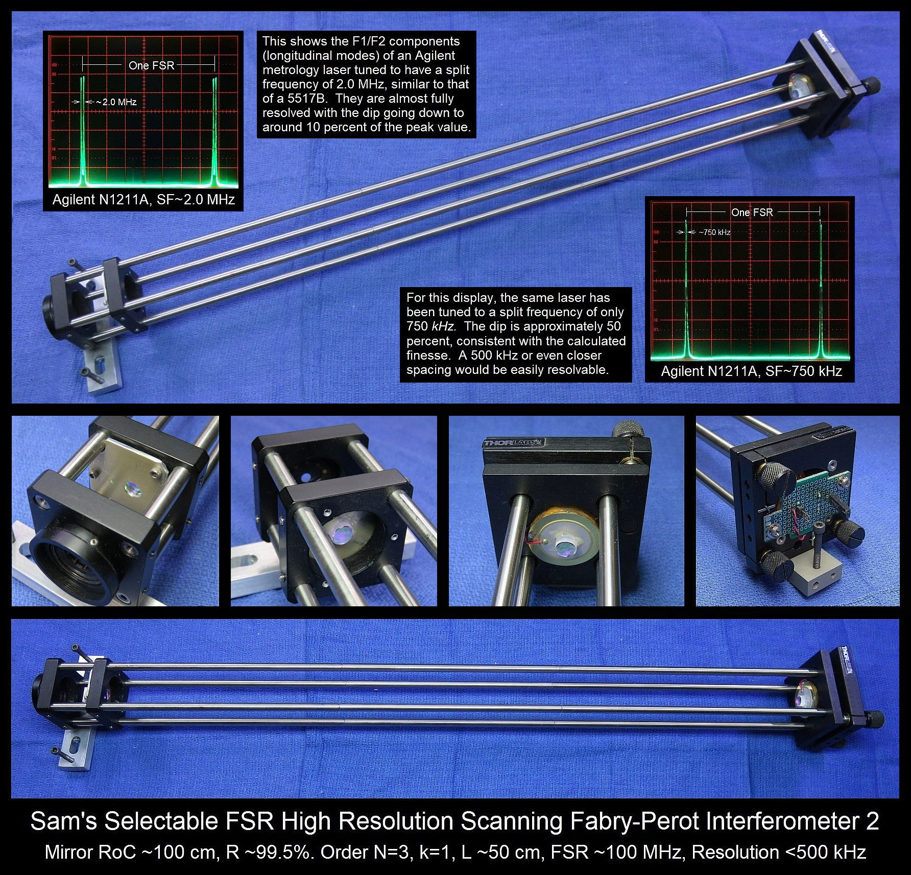
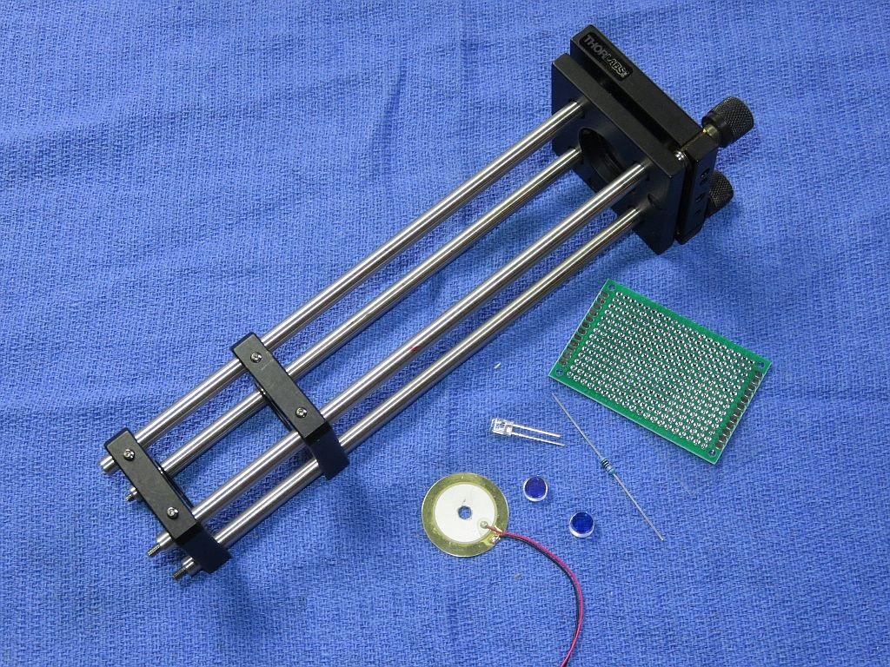
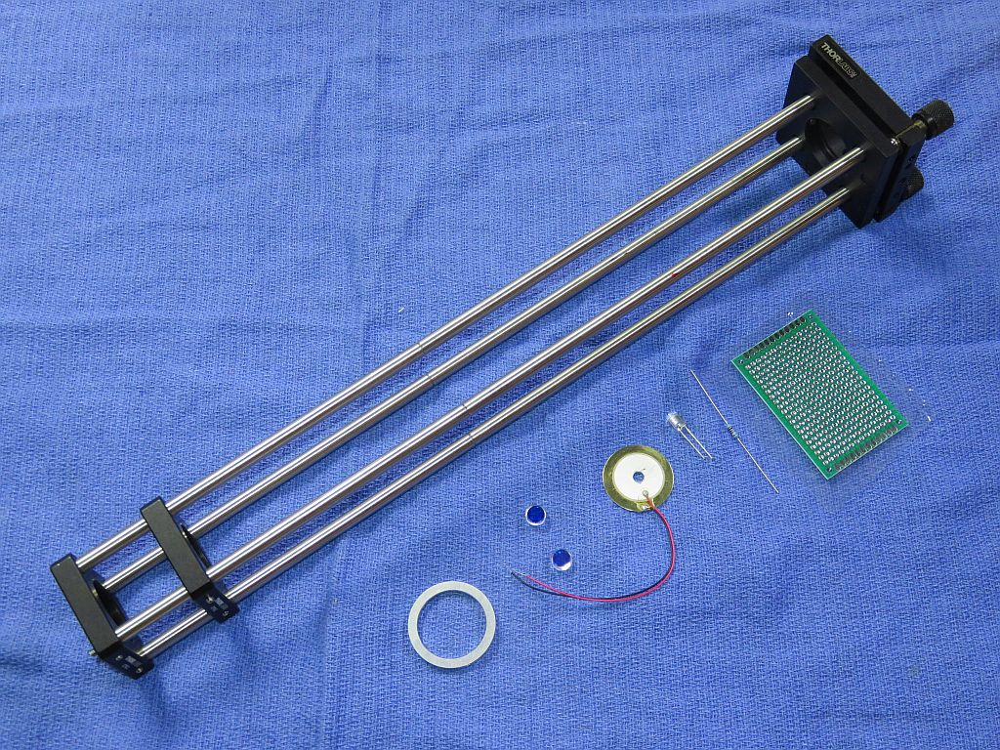
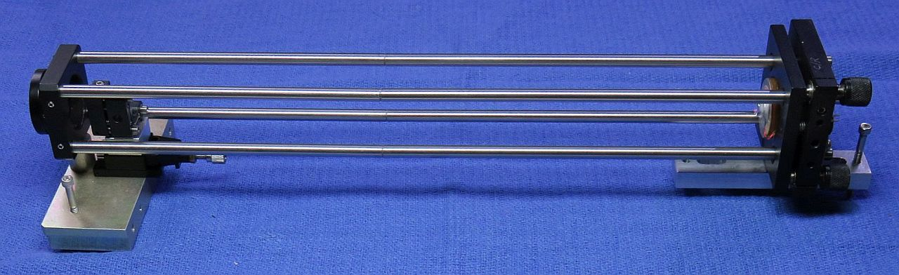
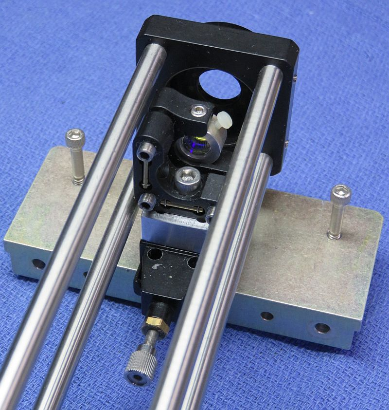
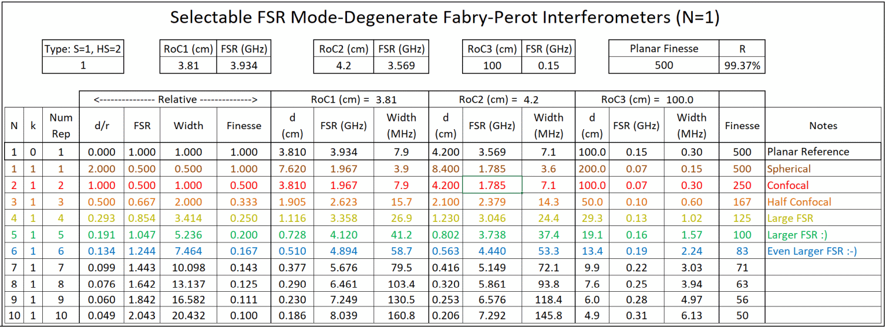
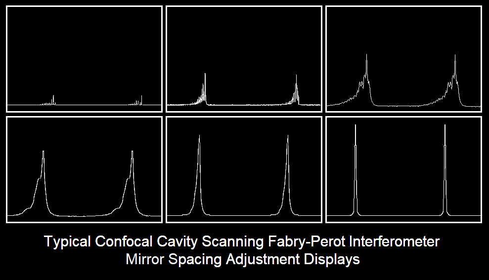
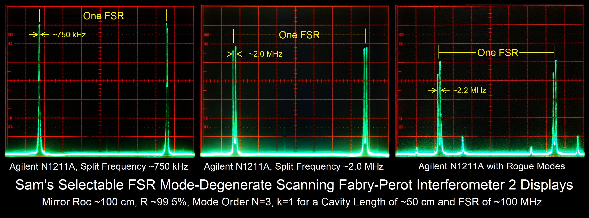
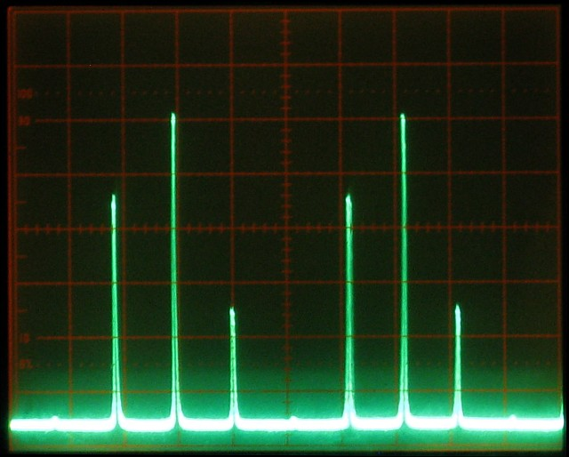

Copyright © 1994-2026
Sam Goldwasser
--- All Rights Reserved ---
The most extreme of these that I offer use 1 meter RoC mirrors but are typically used at 0.5 of the confocal spacing or (nominally) 50 cm. Other cavity lengths are possible subject to the restrictions imposed by the requirement for them to be mode-degenerate. The 50 cm spacing is the case that is most likely to be of interest except for the particularly masochistic among us who may want the absolute highest resolution of a 1 meter confocal SFPI. :)
And while I don't recommend the Ultra-High Resolution SFPIs for anything other than bragging rights to the highest finesse on your block ;-), they, too, can be configured at either confocal or other cavity lengths for the 60 cm RoC mirrors.
The "Mid" SFPI kits are somewhere in between with a nominal confocal spacing of 13.6 cm. Note that the confocal FSR is around 551 MHz, so unless used with a high order of N, these are not really suitable for use in general laser spectrum analyzers.
Much of this also applies to SFPIs where both mirrors are planar but (1) the mirror spacing only determines the FSR and doesn't need to be set to a specific value and (2) alignment with respect to the laser and between the mirrors is much much more critical.
The following assumes the High Resolution kits with 100 cm RoC mirrors, but also applies to shorter ones like the Mid and Long SFPI kits with a proportional change in usable mirror spacings and adjustment sensitivity. Most of the details also assume the use of Thorlabs cage parts similar to those included in the Deluxe and Deluxe+ kits.
The Deluxe and Deluxe+ High Resolution Scanning Fabry-Perot Interferometer (SFPI) kits for yellow through red wavelengths (Deluxe High Resolution SFPI YOR 590-650 nm and Deluxe+ High Resolution SFPI YOR 590-650 nm on eBay) contains the key components to construct a Scanning Fabry-Perot Interferometer suitable for inspecting the split lines of Zeeman two frequency HeNe lasers or other laser or light source with multiple lasing lines very close together. Wavelengths beyond 633 nm and slightly below 594 nm should work as well, but NOT down to 543 or 532 nm.
The Deluxe High Resolution Scanning Fabry-Perot Interferometer (SFPI) kit for green through yellow wavelengths (Deluxe High Resolution SFPI GY 525-600 nm and Deluxe+ High Resolution SFPI GY 525-600 nm on eBay) contains the key components to construct a Scanning Fabry-Perot Interferometer suitable for inspecting the fine structure of a laser with multiple lasing lines very close together. Wavelengths beyond 600 nm and slightly below 525 nm should work as well, but NOT down to 488 nm and probably not even to 500 nm.
Note that all of these are really only useful as laser spectrum analyzers ONLY if the lasers being spectrum aanlyzed have an effective lasing bandwidth smaller than the SFPI's FSR, around 100 MHz for the 1/2 confocal spacing for the 100 cm RoC mirrors. Most common lasers have much wider lasing spectra. Only those like stabilized DFB lasers designed for quasi-single frequency operation may qualify. However, viewing the split lasing lines of the two frequency Zeeman HeNe may qualify as an orgasmic experience by some who have a limited understanding of what that's really all about. ;-)
Performance is best with narrow beam lasers like HeNes but the use of a suitable optic (pinhole or beam reducer) should allow the modes of fat beam lasers to be displayed as well. The advantage of a mode-degenerate SFPI is that alignment with respect to the laser being tested is much less critical than with a planar-planar SFPI and back-reflections can be off-axis so that the laser is less likely to be destabilized and unhappy.
The benefit of the Deluxe and Deluxe+ Hi Res kits is that in addition to what's in the basic Hi Res kits, they includes parts from Thorlabs (or equivalent) for the major mechanical assembly so that much of the scavanging for scrap sheet metal and other tid-bits is eliminated. The Thorlabs "Cage System" provides a rigid frame allowing for initial adjustment which can then be locked in place. The completed frame and other parts are shown below.
The difference between the Deluxe and Deluxe+ Hi-Red kits is in the length of the Thorlabs cage frame: 14 inches for the Deluxe and 22 inches for the Deluxe+. The 22 inch frame is required for the N/K=3/1, 1/2 confocal (~50 cm) mirror spacing; the 14 inch frame will accomodate the N/k=4/1 somewhat shorter (~29.3 cm) mirror spacing. Of course, the longer frame can also be used with the shorter cavity. The 14 and 22 inch frames consist of 2 and 3 sets of cage rods, respectively, so shorter configurations can also be put together without half the thing hanging off the table. :) And the full 100 cm confocal spacing can be accomodated with additional cage rods, and perhaps some intermediate support.
The general optical layout for a confocal SFPI is shown below, though curvatures are greatly exaggerated and the spacing is way too close for those addressed in this document. :)

For the confocal configuration, L = RoC of the mirrors, which must be exactly equal. The Hi Res kits use mirrors with an RoC of around 100 cm (1 meter). While an instrument can be built that long, shorter configurations are more practical unless the absolute highest resolution is required. At specific spacings, they will be "mode degenerate" which means that alignment is not critical, but those spacings are few and far between and must be set precisely.
In these kits, the PZT ring has been replaced by the "holey" beeper element which is more sensitive and a lot less expensive. There is no need for an output focusing lens because the beam is already very narrow. Depending on the characteristics of the input beam, an input focusing lens may improve resolution but none is included in the kit because the specific focal length cannot be predicted without knowledge of the laser source.
The photo below shows the typical parts in one of the Deluxe kits, in this case with a 14 inch Thorlabs cage assembly. The basic kits include the mirrors, PZT, and photodiode ONLY.
The photo montage below is for an implementation using a 22 inch Thorlabs "cage" assembly like in the Hi Res Deluxe+ kits. It is set up for 1/2 the confocal spacing (~50 cm) which is a good tradeoff between size and practicality. Using the mirrors in these kits, its resolvance (the minimum distance between lasing lines that can be detected) can be better than 500 kHz.

The standard Hi Res kits includes:
CAUTION: The mirror coating on the curved (beautiful yellowish-gold or greenish-gold) surface is extremely delicate. DO NOT TOUCH with ANYTHING. The mirrors should be clean, requiring at most to have dust blown off with a air bulb. If cleaning is needed, ONLY use laser mirror cleaning techniques! The warranty does not cover damage to mirror surfaces! I suggest NOT removing the mirrors from the lens tissue until ready to install. They are just mirrors! You can purchase similar mirrors separately for use as decorative aquarium stones, but those tropical fish had better be really special. :-) The other surface is AR-coated and while not as delicate, putting gurbby fingerprints on it is bad form. :( :)
When set up in the confocal configuration where the mirror spacing is equal to the RoC, the Free Spectral Range (FSR) will be approximately 75 MHz. However, as noted above, this would require the instrument to be over 1 meter in length. Everything else in this document assumes the half-confocal spacing of ~50 cm. The mirror set can be used for other mode degenerate SFPI configurations using different spacings if desired. Another one almost as good is the ~29 cm spacing. This is left as an exercise for the student. More info at Mode Degenerate Fabry-Perot Interferometers.
When set up in the half confocal configuration where the mirror spacing is equal to one half the RoC, the Free Spectral Range (FSR) will be approximately 100 MHz.
The attachment of the leads to the PZT disk is rather fragile, especially the one soldered to the metallic coated area which is only loosely bonded to the PZT material itself. So it would be a good idea to coat the area with some 5 minute Epoxy to minimize stress, and then to add a strain relief when installed in the SFPI assembly.
The PD can be connected via shielded cable directly to the vertical input of your scope with a 10K ohm load resistor. However, it is better to connect the PD in series with the load resistor and back-bias it with a few volts (e.g., a 9 V battery). With back bias, the frequency response (across the load resistor) will be better and linear up to several mW. Something along the lines of this would suffice:
Shielded Cable
R Protect PD1 Center
+-----/\/\-------|<|-----------------------+----o Scope input (direct)
| 1K ohms +--------------+ |
| (Optional) | Shield | /
| | | \ R Load
| | | / 10K ohms
| | | \
| +| | - | | |
+------||||-------------+ +---+----o Scope Gnd
B1 | |
Confirm that the PD is responding to light. Room light will suffice, but a better test source is a dimmable LED flashlight. These use Pulse Width Modulation (PWM) to chop the light output and a pulsed waveform should be clearly visible on the scope. In the unlikely event that the sensitivity is too high, reduce R Load.
For initial setup, leave the entire front of the photodiode uncovered. Once there is a signal, installing an aperture to block all but the central 1 mm or so may improve resolution. For low power lasers, a preamp would be beneficial.
Additional parts in the Deluxe kits (Mid, Long, Hi-Res, etc.):
The photo below shows the Thorlabs cage frame and other typical parts in the Deluxe Long kits. The Hi-Res and others are essentially similar except for the length of the cage frame.


Additional parts in the Ultra-Hi-Res kit (and optional on some others):


These make fine tuning the mirror spacing simpler than using the three screws of the KC1, but if doing it only once, the additional cost is probably not worth it.
Dual polarization option (yellow through red kits only):
For simulataneously monitoring the orthogonally polarized longitudinal modes of a random polarized HeNe or other similar laser, this adds an additional photodiode and a small polarizing beam-splitter cube (PBSC). The PBSC splits the beam to the two photodiodes. The simplest mechanical arrangement is to attach the PDs to the PBSC directly with adhesive such as 5 Minute Epoxy. This leads of this assembly can then be slipped through the Perf. board. The PDs should be wired independently and sent to separate channels of your scope, preferably via twisted pairs. The polarization axes of your laser will then need to be aligned with the SFPI "head".
What you must provide:
The following are NOT included:
Take care with the photodiode as it's real easy to break off the leads. I recommend poking it through the Perf. board and immediately securing it with 5 Minute Epoxy. Then solder fine wires to the leads away from the body of the PD. (This assumes it's not the dual polarization option, for that there is more below.)
If you don't have a drill-press and are not familiar with using small drill bits and taps, it's probably best to consider some alternative. It's really easy to put holes in the wrong place at strange angles and to break drill bits and taps, which ends up making a mess because at the very least, it often impossible to extract the broken pieces. (Don't ask how I know.) As noted, hot-melt glue or 5 minute Epoxy are also satisfactory. Either is soft enough that it can be removed and replaced if the need should arise.
Using a narrow file, create a notch wide and deep enough on one surface of the mounting ring for the PZT leads to pass through between the ring and mounting plate.
Use 5 Minute Epoxy to attach the PZT disk to the aluminum spacer ring around its perimeter. The active (coated) side of the PZT disk should be facing up.
The back cavity mirror must be glued to the PZT. First clean the active surface of the PZT disk with alcohol.
(The following applies to the standard 42 mm mirrors. Mirrors with a large RoC may not have significant wedge, if any, and they will likely be installed on an adjustable mount. Therefore this extra step is probably not required.)
Some mirror substrates are ground with significant "wedge" - the front and back are not parallel. Small wedge is often built into mirrors like this to avoid reflections from the non-mirror surface re-entering the laser. Carefully inspect the mirrors under a magnifier or use a caliper taking care not to touch the coated surface. If there is detectable wedge, the mirror should be propped up on the thinner side when gluing so the edge of the coated surface ends up parallel to the mounting surface. (This can be avoided by attaching it to the back of the PZT but I prefer the other way since being recessed, it's almost impossible to clean if that should ever be required.) For the short RoC mirrors used in the Basic and Deluxe kits, the currect angle can usually be obtained by placing a tiny piece of standard Avery sticky label under it on the thin side. :) (Very scientific, huh?) A 1x5 mm piece of label will suffice. For the Hi-Res kits, no propping up may be needed at all for the reasons cited above.
Center the mirror on the PZT disk taking care to orient it so the mark you added lines up with the bump (if applicable). While gently holding it in position with the flat side of a toothpick so as to not contact the coated surface or (less desirable) a clean cotton swab, apply the tiniest amount 5 minute Epoxy in 3 locations around its perimeter. Just enough to secure it. Once the Epoxy sets up, additional adhesive can be added to increase the strength, but there really isn't much stress on this thing and too much adhesive may restrict the motion of the PZT.
After the adhesive fully cures, attach the PZT/mirror on spacer ring (if used) to the KC1, centering it as best as possible by eye. Set this assembly aside covered so the mirror doesn't collect dust or fingerprints.
Locate three locations where holes can be drilled in the aluminum plate that will be in areas of the cage plate which can be tapped. The recommended screw size is 2-56 but 4-40 is also acceptable, and bits and taps for 4-40 are less likely to break. Drill three holes in the plate with the correct drill size to be used for tapping the holes. Then secure your drilled aluminum plate to the cage plate in the desire location and use it as a template to drill the mating holes in the cage plate. Tap those 3 holes and widen the holes in the aluminum plate to be clearance holes for the adjustment screws. Use a split washer or rubber O-ring for each hole between the aluminum plate and cage plate as a spring restoring force. Attach the mount to the cage plate and gently tighten the screws. Now locate the exact center of the aluminum plate with respect to the cage plate and drill a 4-5 mm hole there so the beam can pass through.
Secure the AR-coated side of the 1 meter RoC mirror to the plate with 3 tiny dabs of 5 minute Epoxy as with the back mirror. Take care to center it since there are no XY adjustments.

Of particular interest here are N/k = 3/1 (50 cm spacing) and 4/1 (29.3 cm spacing). These result in more manageable size SFPIs than the 1 meter long confocal, with only a modest reduction in finesse. And 5/1 at around 20 cm would still have decent performance. For a more complete table and much additional info on SFPIs, see the sections of "Sam's Lsaer FAQ" starting with: Scanning Fabry-Perot Interferometers.
When setting the mirror spacing to a specific value of N/k, it's useful to keep in mind that the number of repeated peak-clumps ;-) for a fixed ramp drive voltage scales as N and the average peak amplitude scales as 1/N. So this makes it easy to recognize when a particular distance setting is selecting the incorrect values for N. Further, if not perfectly aligned, the number of distinct spots on the mirror surfaces will be equal to N.
However, if the FSR of the SFPI is smaller than the lasing bandwidth of the laser, there will be wrap-around or aliasing which means the order of the lasing lines will be scrambled and one must be careful about how the display is interpreted. This is certainly true for the Hi-Res SPFIs unless using some very specific types of lasers. Display of a Single Longitudinal Mode (SLM or simgle frequency) laser will be unambiguous with the display repeating at the FSR spacing. Another class of lasers for which this appies are HeNe two-frequency metrology lasers. The "split frequency" of Zeeman-split HeNe lasers from HP/Agilent/Keysight and others is never much above 7 MHz, and most are under 4 MHz. AOM-split lasers like the Zygo 7701/2 have a 20 MHz split frequency. So either type will be well below the FSR and suitable for unambiguous display of their split modes using the Hi Res SFPI at 633 nm.
Assemble the cage rods for the desired frame size, typically either 14 inches or 22 inches. Use a pair of padded pliers to tighten the individual rods together snugly (6+8" or 6+8+8"), they don't have to be super tight, just so they won't come apart with gentle handling. Then install the KC1 adjustable mount flush on the rods and tighten the grub screws. Slide the CP02 or CP33 cage plate with front mirror mount onto the rods but leave it loose. Finally install the front CP02 or CP33 cage plate flush with the ends of the rods and tighten its grub screws. The orientation of the CP02s/CP33s and KC1 should be such that the 8-32 tapped holes on their edges can be at the bottom to secure the front and back to the adjustment plates.
Use an 8-32 screw to secure the smaller foot (adjustment plate) to the KC1. Use a spacer and 8-32 screw to secure the front CP02/CP33 cage plate to the larger adjustment plate. Install the long 6-32 adjustment screws through their respective plates. The entire assembly can now be placed on a flat surface. Putting some soft wood or resilient tile pieces below each adjustment screws will enable them to "seat" by pressing down so the thing won't wonder as adjustments are made. The tips of the adjustments screws can be ground to a point with a file or stone, but if pressed into a soft platform this is not necessary.
Similarly locate the beam near the back mirror that is returned from the front mirror. Adjust the front mirror mount so that it is coincident with the incoming beam at the back mirror.
If these two steps are done carefully, alignment should be close enough for a signal to be detected.
More likely, the peaks will be smeared out or composed of multiple small blips as in the sequence of graphics below. Or there may be nothing. Adjust the spacing of the mirrors in small increments slowly and then then let it settle down. With any movement, the display will become quite scrambled, so be patient. If going one way makes it worse, go the other way. :) If the initial cavity spacing was within a few mm of being optimal, there should be only one place close by where it resolves into a beautiful display like the one above. ;-)

This shows the general appearance of the SFPI display of a single longitudinal mode laser with a scan spanning approximately 2 FSRs for a 50 cm confocal cavity as the mirror spacing approaches optimum. The entire sequence represents a cavity length change of <1 percent but will also depend on the finesse and the mode order (confocal, half confocal, etc.). The higher the finesse, the more critical it will be. In other words you mileage may vary. :) The amplitude of the peaks would actually increase by a much larger amount than shown. Which side the "crud" is on depends on the relationship of the ramp voltage to cavity length, swap if backwards. :) Some of these diagrams are originallly from the Toptica SFPI 100 manual, I hope they won't mind. :)
Once it's near optimal using the sliding adjustment, tighten the set screws to secure the cage plate. Then fine tune further by using the adjustment screws of the KC1 all three at once in small increments and optimizing the display each time. Or if your rig has a linear stage for the front mirror, use that but still optimize the display using the KC1 after each chnage in linear position. It may be necessary to go back and forth between the spacing and mirror alignment before it's perfect.
If there is no evidence of any response related to the laser, confirm that the PZT is actually being driven - set the function generator to a few kHz and listen to the PZT! There should be a very audible tone. Check the output of your function generator and connections if there is none. And check that the photodiode responds to light.
First time users do not appreciate how precise the spacing needs to be. For these long SFPIs, it's not as critical as for those using the 4.2 cm RoC mirrors (which is less than 1/10th the width of a human hair - a few microns), but is still a fraction of 1 mm. Sliding the mount back and forth will not work, primarily because changes to the alignment of the front mirror are unavoidable and will confuse the appearance. But it should get you close. Then lock it in position. Reoptimize the alignment of the front mirror. Then use the three adjustment screws of the KC1 rotating each by 1 turn and then tuning up the input alignment via the front and back adjustment plates and/or the alignment of the input beam. Each time note if the resolution is improving or getting worse. It may take many rounds of this to optimize performance. But then the resolution should be awesome. :-)
It's also essential to avoid back-reflections into the laser, which will likely destabilize it and create chaos in the display. The alignment should be adjusted such the the reflections from the SFPI (mostly the front mirror) do NOT enter the laser's aperture. With the confocal cavity SFPI, a slight offset will not significantly affect resolution. Ideally, an optical isolator could be used but they are pricey and attenuate the laser power. And even one isolator may not be enough for some temperamental lasers. All but the most expensive are polarization-depended so the dual polarization option cannot be used with the SFPI in that case.
In addition, before being well aligned, the signal may be very small. The room lights should be turned off and if the scope has a bandwidth limiter, it should be turned on to minimize pickup of RFI including your local AM radio station. :) A small capacitor can also be placed across the scope's vertical input, suggest 100 pF.
When setting the mirror spacing to a specific value of N/k, it's useful to keep in mind that the number of repeated peak-clumps ;-) for a fixed ramp drive voltage scales as N and the average peak amplitude scales as 1/N. So this makes it easy to recognize when a particular distance setting is selecting the incorrect values for N. Further, if not perfectly aligned, the number of distinct spots on the mirror surfaces will be equal to N. In addition, if an invalid spacing is selected, the amplitude of adjacent peaks tend to vary widely regardless of alignment. But for these long SFPIs, mode orders that do much of anything are not really that close together and a yardstick will suffice for getting in the ball park.
With no angular adjustment, the centerlines of the two mirrors should also be as coincident as practical to really peak the finesse. This requires either reasonable care during installation of the glued mirrors, or fine adjustment of the position of the PZT assembly on the cage plate. (There are Thorlabs parts for this but they do add to the cost, for example the KC1-S.) In addition, down to a point, a narrower beam (e.g, 1 mm) generally results in higher finesse. A wide beam can be put through an aperture (though the signal will be smaller) or a beam expander in reverse. Using mirrors identical to the ones in the kit, I've seen a finesse at 633 nm of more than 200 at the 1/2 confocal spacing as shown in the first of the screen shots, above. However, this may depend on all the stars (or optics) aligning perfectly. ;-) The mirrors also need to be perfectly clean. By this time they may have collected some dust even if no fingers touched them. Use an air bulb to blow it off, NOT 100 psi shop air! And it may take a fair amount of fiddling to get there even after "first detected light". Perhaps 37 hours. ;-)
To show what's possible, here are displays of a typical two-frequency Zeeman HeNe using the same parts as in the Hi-Res YOR kit.

A display scanned over 2 FSRs of a typical 5 mW HeNe laser with 3 modes would appear something like the photo below. However, since the FSR of the SFPI is only around 100 MHz, these modes (which span the ~1.6 GHz gain bandwidth of neon) are wrapped or aliased and thus their spacing and order will likely not represent reality. And if unlucky, they might fall on top of one-another.

For more on SFPIs, see the section:
Scanning Fabry-Perot Interferometers
of "Sam's Lsaer FAQ".